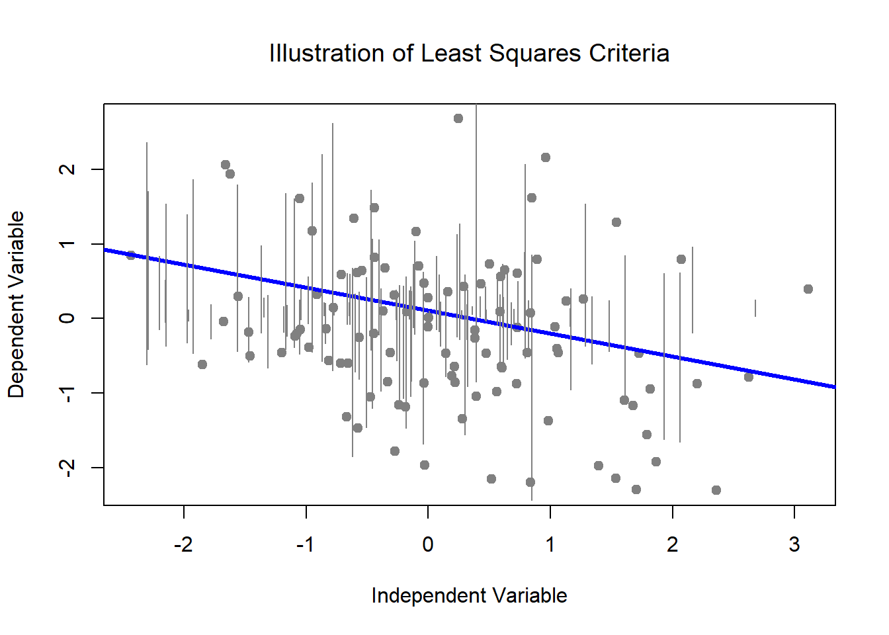
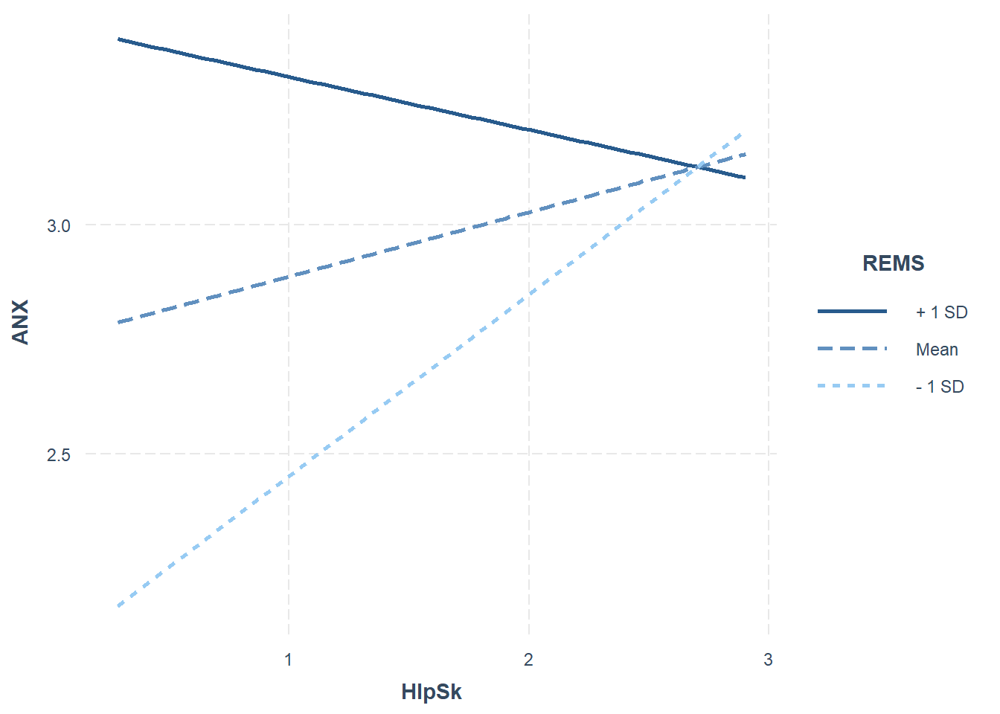

Chapter 7 Simple Moderation in OLS and MLE
The focus of this lecture is an overview of simple moderation. Sounds simple? Wait, there’s more! The focus of this lecture is the transition:
- from null hypothesis significance testing (NHST) to modeling
- from ordinary least squares (OLS) to maximum likelihood estimation (MLE)
In making the transition we will work a moderation/interaction problem from Hayes’ text with both lm() and lavvan/sem() functions.
7.2 On Modeling: Introductory Comments on the simultaneously invisible and paradigm-shifting transition we are making
7.2.1 NHST versus modeling
At least a decade old now, Rogers’ (2010) article in the American Psychologist is one of my favorites. In it, he explores the notion of statistical modeling. He begins with criticisms of null hypothesis statistical testing by describing how it has become a awkward and incongruent blend of Fisherian (i.e., R.A. Fisher) and Neyman-Pearson (i.e., Jerzy Neyman and E. S. Pearson) approaches.
Table 1
| Contributions of the Fisherian and Neyman-Pearson Approaches to NHST (Rodgers, 2010) |
|---|
| Fisher | Neyman-Pearson |
| Developed NHST to answer scientific questions and evaluate theory. | Sought to draw conclusions in applied settings such as quality control. |
| Took an incremental approach to hypothesis testing that involved replication and (potentially) self-correcting; as such viewed replication as a critical element. | Placed emphasis on the importance of each individual decision. |
| Never used the terms, “alternative hypothesis” or “alpha level.” Rather, Fisher used the distribution of the null model to examine “whether the data look weird or not.” | Designed their approach to detect an “alternative hypothesis.” |
| Gave us the null hypothesis and p value. | Gave us the alternative hypothesis, alpha level, and power. |
Over time, these overlapping, but inconsistent, approaches became intertwined. Many students of statistics do not recognize the incompatibilities. Undoubtedly, it makes statistics more difficult to learn (and teach). Below are some of the challenges that Rodgers (2010) outlined.
- Rejecting the null does not provide logical or strong support for the alternative
- Failing to rejct the null does not provide logical or strong support for the null.
- NHST is backwards because it evaluates the probability of the data given the hypothesis, rather than the probability of the hypothesis given the data.
- All point-estimate null hypotheses can be rejected if the sample size is large enough.
- Statistical significance does not necessitate practical significance.
Consequently, we have ongoing discussion/debates about power, effect sizes, sample size, Type I and II errors, confidence intervals, fit statistics, and the relations between them.
7.2.2 Introducing: The Model
Understanding modeling in our scientist-practitioner context probably needs to start with understanding the mathematical model. Niemark and Este (1967) defined a mathematical model as a set of assumptions together with implications drawn from them by mathematical reasoning. Luce (Luce, 1995) suggested that mathematical equations capture model-specific features by highlighting some aspects while ignoring others. The use of mathematics helps us uncover the “structure.” For example, the mean is a mathematical model. I always like to stop and think about that notion…about what the mean represents and what it doesn’t. Pearl (2000) defined the model as an idealized representation of reality that highlights some aspects and ignores others by suggesting that a model:
- matches the reality it describes in some important ways.
- is simpler than that reality.
As we transition from the NHST approach to statistical modeling there is (Rodgers, 2010):
- decreased emphasis on
- null hypothesis
- p values
- increased emphasis on
- model residuals
- degrees of freedom
- additional indices of fit
Further, statistical models (Rodgers, 2010):
- are more readily falsifiable
- require greater theoretical precision
- include assumptions that are more readily evaluated
- offer more practical application
Circling back around to Fisher and Neyman-Pearson, Rogers (2010) contended that Fisher’s work provided a framework for modeling because of the model process of specification, estimation, and goodness of fit. As we move into more complex modeling, we will spend a great deal of time understanding parameters and their relationship to degrees of freedom. Fisher viewed degrees of freedom as statistical currency that could be used in exchange for the estimation of parameters.
If this topic is exciting to you, let me refer you to Cumming’s (Cumming, 2014) article, “The New Statistics: Why and How,” in the Journal, *Psychological Science”
7.3 OLS to ML for Estimation
7.3.1 Ordinary least squares (OLS)
Known by a variety of names, the estimation algorithm typically used in regression models (linear, hierarchical, multiple, sequential) is ordinary least squares (OLS; also termed least squares criterion, general least squares, etc.). As we move into multivariate (and then psychometrics) we are going to transition our estimation method from OLS to MLE. Consequently, it is essential to understand some underlying differences (J. Cohen et al., 2003; Myung, 2003)
In OLS regression:
- The estimated values of regression coefficients are chosen so that the sum of squared errors is minimized (aka, the least squares criteria). Consequently,
- the mean of errors is zero, and
- the errors correlate zero with each predictor
- The solution to OLS regression is analytic
- the equations from which the coefficients are created are known normal equations. Among other places, you can look them up in CCW&A (M. R. Cohen & Nagel, 1934) Appendix 1)

7.3.2 Maximum likelihood estimation (MLE): A brief orientation
Although I started this chapter with a critique of NHST, Fisher is credited (Myung, 2003) with the original development of the central principal of maximum likelihood estimation which is that the desired probability distribution is the one that makes the observed data most likely. As such, the MLE estimate is a resulting parameter vector that maximizes the likelihood function. Myung’s (2003) tutorial provides an excellent review. My summary is derived from Dr. Myung article. A likelihood is a measure of how typical a person (or sample) is of that population.
- When there is one IV the MLE distribution behaves like a chi-square distribution (which also tests observed versus expected data).
- There is a point in the MLE curve that represents where the maximum likelihood exists that the data is likely given the model.
- When there are multiple IVs, this simple curve takes the shape of a k dimensional geometrical surface.
Extended to regression, we are interested in the likelihoods of individuals having particular scores on Y, given values on predictors \(x_{1}\) to \(x_{k}\) (and the specific values of regression coefficients chosen as the parameter estimates)
- MLE provides maximum likelihood estimates of the regression coefficients (and SEs) that is, estimates that make a sample as likely or typical as possible
- L is a symbol for maximum likelihood of a sample
- The solutions are iterative (i.e., identified by trial-and-error; with each trial informed by the prior)
- a statistical criteria is specified for the coefficients to be chosen
- different values of coefficients are tried
- these iterations continue until the regression coefficients cease to change by more than a small amount (i.e., the convergence criteria)
- hopefully, a set of coefficients is found that makes the solution as close to the statistical criteria (i.e., maximum likelihood) as possible
- The optimization algorithm does not guarantee that a set of parameters will be found; convergence failures may be caused by
- multicollinearity among predictors
- a large number of predictors
- the local maxima problem; the optimization algorithm returns sub-optimal parameter values (Myung, 2003)
- MLE is a full information model
- calculates the estimates of model parameters all at once
- MLE is for large samples
- MLE assumptions include
- independence of observations
- multivariate normality of endogenous variables
- independence of exogeneous variables and disturbances
- correct specification of the model (MLE is only appropriate for testing theoretically informed models)
7.3.3 OLS and MLE Comparison
In this table we can compare OLS and MLE in a side-by-side manner. Table 2
| Comparing OLS and MLE (J. Cohen et al., 2003; Myung, 2003) |
|---|
| Criterion | Ordinary Least Squares (OSL) | Maximum Likelihood Estimation (MLE) |
| Parameter values chosen to… | minimize the distance between the predictions from regression line and the observations; considered to be those that are most accurate | be those that are most likely to have produced the data |
| Parameter values are obtained by | equations that are known and linear (you can find them in the “back of the book”) | a non-linear optimization algorithm |
| Preferred when… | sample size is small | sample size is large, for complex models, non-linear models, and when OLS and MLE results differ |
| In R… | the lm() function in base R | lavaan and other packages*; specifying the FIML option allows for missing data (without imputation) |
7.3.4 Hayes and PROCESS (aka conditional process analysis)
In the early 2000s, the bias-corrected, bootstrapped, confidence interval (CI) was identifed as a more powerful approach to assessing indirect effects than the classic Sobel test. Because programs did not produce them, no one was using them. Preacher, Edwards, Lambert, Hayes, and colleagues created Excel worksheets that would calculate these (they were so painful). Hayes turned this process into a series of macros to do a variety of things for SPSS and other programs. Because of his clear, instructional, text, PROCESS is popular. In 2021, Hayes released the PROCESS macro for R. It can be downloaded at the ProcessMacro website. Documention for it is newly emerging. Although PROCESS produces bias-corrected, bootstrapped confidence intervals, for models with indirect effects, PROCESS utilizes OLS as the estimator.
Although most regression models can be completed with the lm() function in base R, it can be instructive to run a handful of these familiar models with lavaan (or even PROCESS) as a precurser to more complicated models.
7.4 Introducing the lavaan package
In the regression classes (as well as in research designs that are cross-sectional, non-linear, and can be parsimoniously and adequately measured with OLS regression) we typically use the base R function, lm() (“linear model”) which relies on an OLS algorithm. You can learn about it with this simple code:
Rosseel’s (2020) lavaan package was developed for SEM, but is readily adaptable to most multiple regression models. Which do we use and when?
- For relatively simple models that involve only predictors, covariates, and moderators, lm() is adequate.
- Models that involve mediation need to use lavaan
- SEM/CFA needs lavaan
- If your sample size is small, but you are planning a mediation, it gets tricky (try to increase your sample size) because MLE estimators rely on large sample sizes (how big? hard to say).
7.4.1 The FIML magic for which we have been waiting
There are different types of maximum likelihood. In this chapter we’ll utilize full information maximum likelihood (FIML). FIML is one of the most practical missing data estimation approaches around and is especially used in SEM and CFA. When data are thought to be MAR (missing at random) or MCAR (missing completely at random), it has been shown to produce unbiased parameter estimates and standard errors.
The FIML approach works by estimating a likelihood function for each individual based on the variables that are present so that all available data are used. Model fit is calculated from (or informed by) the fit functions for all individual cases. Hence, “FIML” is full information maximum likelihood.
When I am able to use lavaan, my approach is to use Parent’s AIA (available information analysis, -Parent (2013)) approach to scoring data, then specify a FIML approach (i.e., adding missing = ‘fiml’) in my lavaan code. Even though the text-book examples we work have complete data, I will try to include this code so that it will be readily available for you, should you use the as templates for your own data.
In this portion of the ReCentering Psych Stats series we are headed toward more complex models that include both mediation and moderation. Hayes (Hayes, 2018) would call this “conditional process analysis.” Others would simply refer to it as “path analysis.” Although all these terms are sometimes overlapping, path analysis is a distinction from structural equation modeling (SEM) where latent variables are composed of the observed variables. Let’s take a look at some of the nuances of the whole SEM world and how it relates to PROCESS.
SEM is broad term (that could include CFA and path analysis) but is mostly reserved for models with some type of latent variable (i.e., some might exclude path analysis from its definitions). SEM typically uses some form of MLE (not ordinary least squares).
Latent variables (circles in the model, below) are those that are “created” in the analytic process but will never appear as a column in your dataset. It may be easiest to think of a latent variable as a scale score – where you sum (or average) the indicator item values to get the score (except we don’t do that). Rather, the LV is “indicated” by variance the indicator/observed/manifest variables share with each other.
The image below is of a simple mediation model but the variables in the model are latent, and indicated by each of the 3 observed/manifest variables. PROCESS (in SPSS) could not assess this model because PROCESS uses ordinary least squares regression and SEM will use a maximum likelihood estimator.

Confirmatory factor analysis (CFA) is what we’ll do in psychometrics. Purely SEM, CFA is used to evaluate the structural validity of a scale or measure. In pure CFA, first-order factors represent subscales and a second-order factor (not required) might provide support for a total scale score. For example, in the above figure, the three squares represent the observed (or manifest) items to which a person respond. In CFA, we evaluate their adequacy to represent the latent variable (circle) construct. It’s a little more complicated than this, but this will get you started. Mediation/indirect effects are not assessed in a pure CFA.
Path analysis is a form of SEM, but without latent variables. That is, all the variables in the model are directly observed. They are represented by squares/rectangles and each has a corresponding column in a dataset. PROCESS in SPSS is entirely path analysis.

Hybrid models are a form of SEM that include observed/manifest variables as predictors along with other latent variables. In the diagram below, you see tiny little measurement models (3 indicators that “create” or “inform” an LV, think baby CFA) and one predictor that is manifest. An example might be a categorical predictor (e.g., treatment, control).

7.5 Picking up with Moderation
Moderation: The effect of X (IV) on some variable Y (DV) is moderated if its size, sign, or strength depends on or can be predicted by W (moderator). In that case, W is said to be a moderator of X’s effect on Y. Or, that W and X interact in their influence on Y.
Identifying a moderator of an effect helps establish the boundary conditions of that effect or the circumstances, stimuli, or type of people for which the effect is large versus small, present versus absent, positive versus negative, and so forth.
Conditional vs Unconditional Effects: Consider the following two equations:
\[\hat{Y} = i_{y}+b_{1}X + b_{2}W + e_{y}\]
and
\[\hat{Y} = i_{y}+b_{1}X + b_{2}W + b_{3}XW+ e_{y}\]
The first equation constrains X’s effect to be unconditional on W, meaning that it is invariant across all values of W. By introducting the interaction term (\(b_{3}XW\)), we can evaluate a model where X’s effect can be dependent on W. That is, for different values of W, X’s effect on Y is different. The resulting equation (#2) is the simple linear moderation model. In it, X’s effect on Y is conditional.
7.6 Workflow for a Simple Moderation
Below is a workflow comparing the approaches to analyzing a regression model (moderators only) with OLS and MLE.

The Bonus Track at the end of the chapter includes script templates with just X and Y variables.
7.7 Research Vignette
The research vignette comes from the Kim, Kendall, and Cheon’s (2017), “Racial Microaggressions, Cultural Mistrust, and Mental Health Outcomes Among Asian American College Students.” Participants were 156 Asian American undergraduate students in the Pacific Northwest. The researchers posited the a priori hypothesis that cultural mistrust would mediate the relationship between racial microaggressions and two sets of outcomes: mental health (e.g., depression, anxiety, well-being) and help-seeking.
Variables used in the study included:
- REMS: Racial and Ethnic Microaggressions Scale (Nadal, 2011). The scale includes 45 items on a 2-point scale where 0 indicates no experience of a microaggressive event and 1 indicates it was experienced at least once within the past six months. Higher scores indicate more experience of microaggressions.
- CMI: Cultural Mistrust Inventory (Terrell & Terrell, 1981). This scale was adapted to assess cultural mistrust harbored among Asian Americans toward individuals from the mainstream U.S. culture (e.g., Whites). The CMI includes 47 items on a 7-point scale where higher scores indicate a higher degree of cultural mistrust.
- ANX, DEP, PWB: Subscales of the Mental Health Inventory (Veit & Ware, 1983) that assess the mental health outcomes of anxiety (9 items), depression (4 items), and psychological well-being (14 items). Higher scores (on a 6 point scale) indicate stronger endorsement of the mental health outcome being assessed.
- HlpSkg: The Attiudes Toward Seeking Professional Psychological Help – Short Form (Fischer & Farina, 1995) includes 10 items on a 4-point scale (0 = disagree, 3 = agree) where higher scores indicate more favorable attitudes toward help seeking.
7.7.1 Simulate Data from the Journal Article
First, we simulate the data from the means, standard deviations, and correlation matrix from the journal article.
# Entering the intercorrelations, means, and standard deviations from
# the journal article
mu <- c(0.34, 3, 2.98, 2.36, 3.5, 1.64)
sd <- c(0.16, 0.83, 0.99, 0.9, 0.9, 0.53)
r_mat <- matrix(c(1, 0.59, 0.26, 0.34, -0.25, -0.02, 0.59, 1, 0.12, 0.19,
-0.28, 0, 0.26, 0.12, 1, 0.66, -0.55, 0.07, 0.34, 0.19, 0.66, 1, -0.66,
0.05, -0.25, -0.28, -0.55, -0.66, 1, 0.08, -0.02, 0, 0.07, 0.05, 0.08,
1), ncol = 6)
# Creating a covariance matrix
cov_mat <- sd %*% t(sd) * r_mat
# Set random seed so that the following matrix always gets the same
# results.
set.seed(210409)
library(MASS)
Kim_df <- mvrnorm(n = 156, mu = mu, Sigma = cov_mat, empirical = TRUE)
# renaming the variables
as.data.frame(Kim_df, row.names = NULL, optional = FALSE, make.names = TRUE)
library(tidyverse)
Kim_df <- Kim_df %>%
as.data.frame %>%
rename(REMS = V1, CMI = V2, ANX = V3, DEP = V4, PWB = V5, HlpSk = V6)
# Checking our work against the original correlation matrix
# round(cor(Kim_df),3)We can perform a quick check of our data to check its alignment with the journal article, and also get a sense of the bivariate relations with a couple of useful tools. The package apaTables produces a journal-ready table with means, standard deviations, and the correlation matrix.

Kim et al. (2017) did not conduct any moderation analyses in their article. Core to their analysis was predicting mental health outcomes (e.g., anxiety, depression, psychological well-being). Their predictors were racial/ethnic microaggressions, cultural mistrust, and help-seeking behaviors. In the majority of their models, REMS was the independent variable, predicting one of the mental health outcomes, mediated by cultural mistrust. Given the strong correlation with REMS (r = 0.59) the choice of CMI as a mediator is sound.
In looking at the data, I will ask the question, “Does help-seeking (HlpSk) moderate the relationship between REMS and ANX?”

Here is the formulaic rendering: \[Y = i_{Y}+ b_{1}X+ b_{2}W + b_{3}XW +e_{Y}\]
7.8 Working the Simple Moderation with OLS and MLE
7.8.1 OLS with lm()
In this demonstration we will use the lm() function in base R to evaluate help seeking behaviors (HlpSK) as a moderator to the relationship between racial/ethnic microaggressions (REMS) on anxiety (ANX). Ordinary least squares is the estimator used in lm(). We will probe the moderating effect with both pick-a-point and Johnson-Neyman approaches.
Let’s specify this simple moderation model with base R’s lm() function. We’ll use the jtools package so we get that great summ function and interactions for an awesome plot.
library(jtools) #the summ function creates a terrific regression table
library(interactions)
library(ggplot2)
KimSimpMod <- lm(ANX ~ REMS * HlpSk, data = Kim_df)
# summary(KimSimpMod)Table 3
| Observations | 156 |
| Dependent variable | ANX |
| Type | OLS linear regression |
| F(3,152) | 5.047 |
| R² | 0.091 |
| Adj. R² | 0.073 |
| Est. | S.E. | t val. | p | |
|---|---|---|---|---|
| (Intercept) | 1.280 | 0.618 | 2.073 | 0.040 |
| REMS | 4.315 | 1.655 | 2.607 | 0.010 |
| HlpSk | 0.683 | 0.350 | 1.952 | 0.053 |
| REMS:HlpSk | -1.596 | 0.938 | -1.702 | 0.091 |
| Standard errors: OLS |
Looking at these results we can see that the predictors account for about 10% of variance in anxiety. It appears that there is a statistically significant interaction of REMS and HlpSk on Anxiety. The interaction_plot() function from the package, interactions can make helpful illustrations. In the case of interactions/moderations, I like to run them “both ways” to see which makes more sense.


The first figure (where REMS is the moderator) illustrates that for those with the highest experience of racial/ethnic microaggression, the relationship between help-seeking and anxiety is strong ad positive. Anxiety is the highest for those who are +1SD above the mean on REMS and who have sought help. This slope is far less strong for those at the mean on REMS and the slope trends negative for those at the lowest REMS.
The second figure places HlpSg as the moderator. The results are the same, merely presented differently. Here we see that at all levels of help seeking, there is a positive relationship between REMS and anxiety. The relationship is the sharpest for those who are at +1SD above the mean on help-seeking. That is, the highest levels of anxiety are among those who experience the most racial and ethnic microaggressions and have the most favorable attitudes toward help-seeking.
Next, let’s probe the interaction with simple slopes. With these additional inferential tests we can see where in the distribution of the moderator, X has an effect on Y that is different from zero (and where it does not). There are two common approaches.
The Johnson-Neyman is a floodlight approach and provides an indication of the places in the distribution of W (moderator) that X has an effect on Y that is different than zero. The pick-a-point is sometimes called the analysis of simple slopes or a spotlight approach, probes the distribution at specific values (often the M +/- 1SD).
JOHNSON-NEYMAN INTERVAL
When HlpSk is INSIDE the interval [-4.47, 2.01], the slope of REMS is p <
.05.
Note: The range of observed values of HlpSk is [0.28, 2.90]
SIMPLE SLOPES ANALYSIS
Slope of REMS when HlpSk = 1.11 (- 1 SD):
Est. S.E. t val. p
------ ------ -------- ------
2.54 0.72 3.51 0.00
Slope of REMS when HlpSk = 1.64 (Mean):
Est. S.E. t val. p
------ ------ -------- ------
1.70 0.48 3.53 0.00
Slope of REMS when HlpSk = 2.17 (+ 1 SD):
Est. S.E. t val. p
------ ------ -------- ------
0.85 0.66 1.30 0.20# sim_slopes(KimSimpMod, pred=GRIcntlty, modx = GRMS) #sometimes I
# like to look at it in reverse -- like in the plotsThe Johnson-Neyman suggests that the relationship between REMS and ANX is statistically significant when HlpSk is above 1.34 (the mean of help-seeking is 1.64). We see the same result in the pick-a-point approach where there is a non-significant relationship between REMS and anxiety when help-seeking is 1SD below the mean. However, there is a statistically significant relationship between help-seeking and REMS when help-seeking is at and above the mean.
7.8.1.1 An APA Style Write-up of OLS results
Method/Analytic Strategy
Data were analyzed with an ordinary least squares approach with the base R function (v. 4.0.4), lm(). We specified a model predicting anxiety (ANX) from the interacting effects of racial and ethnic microaggressions (REMS) and attitudes toward help-seeking (HlpSk).
Results
Preliminary Analyses
- Missing data analyses and managing missing data
- Bivariate correlations, means, SDs
- Distributional characteristics, assumptions, etc.
- Address limitations and concerns
Primary Analyses A multiple regression analysis was conducted to predict anxiety from racial and ethnic microaggressions and attitudes toward help-seeking. Results supported a statistically significant interaction effect that accounted for 8% of the variance. Probing the interaction effect with Johnson-Neyman and pick-a-point approaches indicated that the relationship between REMS and anxiety is non-significant when help-seeking is 1SD below the mean, but is significant when help-seeking is at and above the mean. Results are listed in Table 3. As illustrated in Figure 1, the relationship between REMS and anxiety is the sharpest for those who are at +1SD above the mean on help-seeking. That is, the highest levels of anxiety are among those who experience the most racial and ethnic microaggressions and have the most favorable attitudes toward help-seeking.
7.8.2 MLE with lavaan::sem()
Specifying the path analysis in lavaan
Things to note:
- MLE has an element of random, by setting the seed we tell it where to “start”…so we all get the same answer
- The code below “draws our model.” It opens and close with ’ marks
- “Labels” (e.g., b1, b2) are useful for identifying the paths. But later in path analysis (mediation) we will use them to do some calculations (i.e., multiplying paths to create an indirect effect). In SEM/CFA (latent variable modeling) we can use them to “fix and free” constraints; the asterisk makes them look like interactions, but they are not
- Interactions are created with the colon
- We can use hashtags internal to the code to remind ourselves (or teach others)
- Following specification of the model, we use the lavaan function sem() to conduct the estimation
- adding missing = ‘fiml’ is the magic we have been waiting for with regard to missing data
- bootstraping is an MLE tool that gives us greater power (more later in mediation)
- the summary() and parameterEstimates() functions get us the desired output
library(lavaan)
set.seed(210501)
KimSimpModMLE <- "
ANX ~ b1*REMS + b2*HlpSk + b3*REMS:HlpSk
#intercept (constant) of ANX
ANX ~ ANX.mean*1
#mean of W (HlpSk, in this case) for use in simple slopes
HlpSk ~ HlpSk.mean*1
#variance of W (age, in this case) for use in simple slopes
HlpSk ~~HlpSk.var*HlpSk
#simple slopes
SD.below := b1 + b3*(HlpSk.mean - sqrt(HlpSk.var))
mean := b1 + b3*(HlpSk.mean)
SD.above := b1 + b3*(HlpSk.mean + sqrt(HlpSk.var))
"
kMLE_fit <- sem(KimSimpModMLE, data = Kim_df, missing = "fiml", se = "bootstrap",
bootstrap = 1000)Warning in lav_partable_vnames(FLAT, "ov.x", warn = TRUE): lavaan WARNING:
model syntax contains variance/covariance/intercept formulas
involving (an) exogenous variable(s): [HlpSk]; These variables
will now be treated as random introducing additional free
parameters. If you wish to treat those variables as fixed, remove
these formulas from the model syntax. Otherwise, consider adding
the fixed.x = FALSE option.k1summary <- summary(kMLE_fit, standardized = TRUE, fit = TRUE, ci = TRUE)
k1ParamEsts <- parameterEstimates(kMLE_fit, boot.ci.type = "bca.simple",
standardized = TRUE)
k1summarylavaan 0.6.16 ended normally after 9 iterations
Estimator ML
Optimization method NLMINB
Number of model parameters 7
Number of observations 156
Number of missing patterns 1
Model Test User Model:
Test statistic 275.935
Degrees of freedom 2
P-value (Chi-square) 0.000
Model Test Baseline Model:
Test statistic 290.749
Degrees of freedom 5
P-value 0.000
User Model versus Baseline Model:
Comparative Fit Index (CFI) 0.041
Tucker-Lewis Index (TLI) -1.397
Robust Comparative Fit Index (CFI) 0.041
Robust Tucker-Lewis Index (TLI) -1.397
Loglikelihood and Information Criteria:
Loglikelihood user model (H0) -333.690
Loglikelihood unrestricted model (H1) -195.722
Akaike (AIC) 681.380
Bayesian (BIC) 702.728
Sample-size adjusted Bayesian (SABIC) 680.571
Root Mean Square Error of Approximation:
RMSEA 0.937
90 Percent confidence interval - lower 0.846
90 Percent confidence interval - upper 1.032
P-value H_0: RMSEA <= 0.050 0.000
P-value H_0: RMSEA >= 0.080 1.000
Robust RMSEA 0.937
90 Percent confidence interval - lower 0.846
90 Percent confidence interval - upper 1.032
P-value H_0: Robust RMSEA <= 0.050 0.000
P-value H_0: Robust RMSEA >= 0.080 1.000
Standardized Root Mean Square Residual:
SRMR 0.179
Parameter Estimates:
Standard errors Bootstrap
Number of requested bootstrap draws 1000
Number of successful bootstrap draws 1000
Regressions:
Estimate Std.Err z-value P(>|z|) ci.lower ci.upper
ANX ~
REMS (b1) 4.315 1.364 3.163 0.002 1.769 7.333
HlpSk (b2) 0.683 0.291 2.350 0.019 0.129 1.320
REMS:HlpS (b3) -1.596 0.821 -1.944 0.052 -3.543 -0.131
Std.lv Std.all
4.315 0.632
0.683 0.332
-1.596 -0.485
Intercepts:
Estimate Std.Err z-value P(>|z|) ci.lower ci.upper
.ANX (ANX.) 1.280 0.498 2.573 0.010 0.240 2.272
HlpSk (HlS.) 1.640 0.043 38.507 0.000 1.552 1.729
Std.lv Std.all
1.280 1.176
1.640 3.104
Variances:
Estimate Std.Err z-value P(>|z|) ci.lower ci.upper
HlpSk (HlS.) 0.279 0.029 9.506 0.000 0.221 0.338
.ANX 0.886 0.108 8.202 0.000 0.666 1.094
Std.lv Std.all
0.279 1.000
0.886 0.748
Defined Parameters:
Estimate Std.Err z-value P(>|z|) ci.lower ci.upper
SD.below 2.540 0.572 4.441 0.000 1.424 3.719
mean 1.697 0.420 4.044 0.000 0.846 2.490
SD.above 0.854 0.632 1.351 0.177 -0.487 1.994
Std.lv Std.all
2.540 -0.389
1.697 -0.875
0.854 -1.360 lhs op rhs label est se
1 ANX ~ REMS b1 4.315 1.364
2 ANX ~ HlpSk b2 0.683 0.291
3 ANX ~ REMS:HlpSk b3 -1.596 0.821
4 ANX ~1 ANX.mean 1.280 0.498
5 HlpSk ~1 HlpSk.mean 1.640 0.043
6 HlpSk ~~ HlpSk HlpSk.var 0.279 0.029
7 ANX ~~ ANX 0.886 0.108
8 REMS ~~ REMS 0.025 0.000
9 REMS ~~ REMS:HlpSk 0.042 0.000
10 REMS:HlpSk ~~ REMS:HlpSk 0.110 0.000
11 REMS ~1 0.340 0.000
12 REMS:HlpSk ~1 0.556 0.000
13 SD.below := b1+b3*(HlpSk.mean-sqrt(HlpSk.var)) SD.below 2.540 0.572
14 mean := b1+b3*(HlpSk.mean) mean 1.697 0.420
15 SD.above := b1+b3*(HlpSk.mean+sqrt(HlpSk.var)) SD.above 0.854 0.632
z pvalue ci.lower ci.upper std.lv std.all std.nox
1 3.163 0.002 1.970 7.812 4.315 0.632 3.965
2 2.350 0.019 0.151 1.395 0.683 0.332 0.100
3 -1.944 0.052 -3.821 -0.263 -1.596 -0.485 -1.467
4 2.573 0.010 0.226 2.169 1.280 1.176 1.176
5 38.507 0.000 1.554 1.730 1.640 3.104 3.104
6 9.506 0.000 0.224 0.338 0.279 1.000 1.000
7 8.202 0.000 0.696 1.116 0.886 0.748 0.748
8 NA NA 0.025 0.025 0.025 1.000 0.025
9 NA NA 0.042 0.042 0.042 0.803 0.042
10 NA NA 0.110 0.110 0.110 1.000 0.110
11 NA NA 0.340 0.340 0.340 2.132 0.340
12 NA NA 0.556 0.556 0.556 1.680 0.556
13 4.441 0.000 1.498 3.807 2.540 -0.389 0.879
14 4.044 0.000 0.857 2.511 1.697 -0.875 -0.588
15 1.351 0.177 -0.539 1.960 0.854 -1.360 -2.055Recall, this was our formula:
Here is the formulaic rendering: \[Y = i_{Y}+ b_{1}X+ b_{2}W + b_{3}XW +e_{Y}\]
Looking at our data here’s what we’ve learned: \[\hat{Y} = 3.26 + (-1.57)X + (-0.52)W + 1.98XW\]
library(semPlot)
semPaths(kMLE_fit, #must identify the model you want to map
what = "est", #"est" plots the estimates, but keeps it greyscale with no fading
#whatLabels = "stand", #"stand" changes to standardized values
layout = 'tree', rotation = 2, #together, puts predictors on left, IVs on right
#layout = 'circle',
edge.label.cex = 1.00, #font size of parameter values
#edge.color = "black", #overwrites the green/black coloring
sizeMan=10, #size of squares/observed/"manifest" variables
fade=FALSE, #if TRUE, there lines are faded such that weaker lines correspond with lower values -- a cool effect, but tough for journals
esize=2,
asize=3,
#label.prop = .5,
label.font = 2.5, #controls size (I think) of font for labels
label.scale = TRUE, #if false, the labels will not scale to fit inside the nodes
nDigits = 3, #decimal places (default is 2)
residuals = FALSE,#excludes residuals (and variances) from the path diagram
nCharNodes = 0, #specifies how many characters to abbreviate variable lables; default is 3. If 0, uses your entire variable label and adjusts fontsize (which could be a downside)
intercepts = FALSE, #gets rid of those annoying triangles (intercepts) in the path diagram)
)
title("Help Seeking as a Moderator in the Relationship between REMS and ANX")
If I had just run this with lavaan, I would want to plot the interaction and would do so with the OLS methods I demonstrated above.
Attaching package: 'formattable'The following object is masked from 'package:MASS':
area7.8.3 Tabling the data
In this table, I gather the output from both the OLS and MLE approaches. Youll notice below that the \(B\) weights are identical to the third decimal place (shown). The standard errors and p values wiggle around a bit, but are consistent with each other (and lead to the same significant/non-significant conclusion). The \(R^2\) vaues are quite divergent.
Further comparison shows that the OLS output provides an \(F\) statistic that indicates whether or not the overall model is significant. These are commonly reported in Results. In contrast, the MLE output has a page or more of fit statistics (e.g., CFI, RMSEA, Chi-square goodness of fit) that are commonly reported in latent variable modeling such as SEM and CFA. Although some researchers will report them in path analysis, I tend to preer the focus on the strength and significance of the regression weights.
Table 4
| A Comparison of OLS and MLE Regression Results |
|---|
| OLS with the lm() in base R | MLE with lavaan |
| \(B\) | \(SE\) | \(p\) | \(B\) | \(SE\) | \(p\) | |
| ANX (Intercept) | 1.280 | 0.618 | 0.040 | 1.280 | 0.498 | 0.010 |
| REMS (X) | 4.315 | 1.655 | 0.010 | 4.315 | 1.364 | 0.002 |
| HlpSk (W) | 0.683 | 0.350 | 0.053 | 0.683 | 0.291 | 0.019 |
| REMS:HlpSK (XY) | -1.596 | 0.938 | 0.091 | -1.596 | 0.821 | 0.052 |
| \(R^2\) | \(R^2\) | |
| 9.06% |
7.8.4 APA Style Writeup
Method/Analytic Strategy
Data were analyzed with a maximum likelihood approach the package, lavaan (v. 0.6-7) We specified a model predicting anxiety (ANX) from the interacting effects of racial and ethnic microaggressions (REMS) and attitudes toward help-seeking (HlpSk).
Results
Preliminary Analyses
- Missing data analyses and managing missing data
- Bivariate correlations, means, SDs
- Distributional characteristics, assumptions, etc.
- Address limitations and concerns
Primary Analyses A multiple regression analysis was conducted to predict anxiety from racial and ethnic microaggressions and attitudes toward help-seeking. Results supported a statistically significant interaction effect that accounted for of the variance. Probing the interaction effect with the pick-a-point approaches indicated that the relationship between REMS and anxiety is non-significant when help-seeking is 1SD below the mean, but is significant when help-seeking is at and above the mean. Results are listed in Table 4. As illustrated in Figure 1, the relationship between REMS and anxiety is the sharpest for those who are at +1SD above the mean on help-seeking. That is, the highest levels of anxiety are among those who experience the most racial and ethnic microaggressions and have the most favorable attitudes toward help-seeking.
7.10 Practice Problems
The suggested practice problem for this chapter is to conduct a simple moderation with both the OLS/lm() approach and the MLE/lavaan approach.
7.10.1 Problem #1: Rework the research vignette as demonstrated, but change the random seed
If this topic feels a bit overwhelming, simply change the random seed in the data simulation, then rework the problem. This should provide minor changes to the data (maybe in the second or third decimal point), but the results will likely be very similar.
| Assignment Component | ||
|---|---|---|
| 1. Assign each variable to the X, Y, and W roles (ok but not required to include a cov) | 5 | _____ |
| 2. Specify and run the OLS/lm() model | 5 | _____ |
| 3. Probe the interaction with the pick-a-point and Johnson-Neyman approaches | 5 | _____ |
| 4. Create an interaction figure | 5 | _____ |
| 5. Create a table (a package-produced table is fine) | 5 | _____ |
| 6. Create an APA style write-up of the results | 5 | _____ |
| 7. Repeat the analysis in lavaan (specify the model to include probing the interaction) | 5 | _____ |
| 8. Create a model figure. | 5 | _____ |
| 9. Create a table. | 5 | _____ |
| 10. Represent your work in an APA-style write-up | 5 | _____ |
| 11. Explanation to grader | 5 | _____ |
7.10.2 Problem #2: Rework the research vignette, but swap one or more variables
Use the simulated data, but swap out at least one of the variables in the model to conduct the simple moderation using both approaches.
| Assignment Component | ||
|---|---|---|
| 1. Assign each variable to the X, Y, and W roles (ok but not required to include a cov) | 5 | _____ |
| 2. Specify and run the OLS/lm() model | 5 | _____ |
| 3. Probe the interaction with the pick-a-point and Johnson-Neyman approaches | 5 | _____ |
| 4. Create an interaction figure | 5 | _____ |
| 5. Create a table (a package-produced table is fine) | 5 | _____ |
| 6. Create an APA style write-up of the results | 5 | _____ |
| 7. Repeat the analysis in lavaan (specify the model to include probing the interaction) | 5 | _____ |
| 8. Create a model figure. | 5 | _____ |
| 9. Create a table. | 5 | _____ |
| 10. Represent your work in an APA-style write-up | 5 | _____ |
| 11. Explanation to grader | 5 | _____ |
7.10.3 Problem #3: Use other data that is available to you
Using data for which you have permission and access (e.g., IRB approved data you have collected or from your lab; data you simulate from a published article; data from an open science repository; data from other chapters in this OER), complete the simple moderation with both approaches.
| Assignment Component | ||
|---|---|---|
| 1. Assign each variable to the X, Y, and W roles (ok but not required to include a cov) | 5 | _____ |
| 2. Specify and run the OLS/lm() model | 5 | _____ |
| 3. Probe the interaction with the pick-a-point and Johnson-Neyman approaches | 5 | _____ |
| 4. Create an interaction figure | 5 | _____ |
| 5. Create a table (a package-produced table is fine) | 5 | _____ |
| 6. Create an APA style write-up of the results | 5 | _____ |
| 7. Repeat the analysis in lavaan (specify the model to include probing the interaction) | 5 | _____ |
| 8. Create a model figure. | 5 | _____ |
| 9. Create a table. | 5 | _____ |
| 10. Represent your work in an APA-style write-up | 5 | _____ |
| 11. Explanation to grader | 5 | _____ |
7.11 Bonus Track:

Below is template for a simple moderation conducted with the OLS approach using the base R function, lm()
library(jtools) #the summ function creates a terrific regression table
library(interactions)
library(ggplot2)
#The regression
#OLSmodel <- lm(Y~X*W, data=my_df)
#summary(KimSimpMod)
#Cool Table
#summ(KimSimpMod, digits = 3)
#Probe Simple Slopes
#sim_slopes(OLSmodel, pred = X, modx = W)
#Figures
#interact_plot(OLSmodel, pred = W, modx = X)
#interact_plot(OLSmodel, pred = X, modx = W)Below is a template for a simple moderation conducted with the MLE approach using the package, lavaan.
library(lavaan)
# set.seed(210501) MLEmodel <- ' Y ~ b1*X + b2*W + b3*X:W intercept
# (constant) of Y Y ~ Y.mean*1 mean of W for use in simple slopes W ~
# W.mean*1 variance of W for use in simple slopes W ~~ W .var*W
# simple slopes SD.below := b1 + b3*(W.mean - sqrt(W.var)) mean := b1
# + b3*(W.mean) SD.above := b1 + b3*(W.mean + sqrt(W.var))
#'
# MLEmod_fit <- sem(MLEmodel, data = my_df, missing = 'fiml', se =
# 'bootstrap', bootstrap = 1000) MLEmod_fit_summary <-
# summary(MLEmod_fit, standardized = TRUE, rsq=T, ci=TRUE)
# MLEmodParamEsts <- parameterEstimates(MLEmod_fit, boot.ci.type =
# 'bca.simple', standardized=TRUE) MLEmod_fit_summary MLEmodParamEsts# library(semPlot) semPaths(MLEmod_fit, #must identify the model you
# want to map what = 'est', #'est' plots the estimates, but keeps it
# greyscale with no fading whatLabels = 'stand', #'stand' changes to
# standardized values layout = 'tree', rotation = 2, #together, puts
# predictors on left, IVs on right layout = 'circle', edge.label.cex
# = 1.00, #font size of parameter values edge.color = 'black',
# #overwrites the green/black coloring sizeMan=10, #size of
# squares/observed/'manifest' variables fade=FALSE, #if TRUE, there
# lines are faded such that weaker lines correspond with lower values
# -- a cool effect, but tough for journals esize=2, asize=3,
# label.prop = .5, label.font = 2.5, #controls size (I think) of font
# for labels label.scale = TRUE, #if false, the labels will not scale
# to fit inside the nodes nDigits = 3, #decimal places (default is 2)
# residuals = FALSE,#excludes residuals (and variances) from the path
# diagram nCharNodes = 0, #specifies how many characters to
# abbreviate variable lables; default is 3. If 0, uses your entire
# variable label and adjusts fontsize (which could be a downside)
# intercepts = FALSE, #gets rid of those annoying triangles
# (intercepts) in the path diagram) ) title('Help Seeking as a
# Moderator in the Relationship between REMS and ANX')